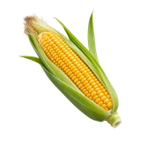

होम / मक्का

मक्का का भाव आज | Maize Mandi Price Today
मक्का के आज के उपलब्ध मंडी भाव देखें—इंदौर, हरदा, कोटा और राजकोट के मॉडल, न्यूनतम और अधिकतम रेट।
नीचे मंडी-वार सूची में मक्का के उपलब्ध भाव दिए हैं। मंडी के नाम पर क्लिक करके उस मंडी की दूसरी फसलों के भाव भी देख सकते हैं।
मक्का का भाव कैसे देखें और रेट किन बातों से बदलता है
मक्का का भाव दाने की नमी, आवक और फीड तथा औद्योगिक खरीदारों की मांग से प्रभावित हो सकता है। नई और भंडारित फसल की स्थिति भी अलग तरह से देखी जाती है।
आज का मक्का भाव कैसे देखें
इस पेज की मंडी-वार तालिका में न्यूनतम, मॉडल और अधिकतम भाव देखें। अपनी नज़दीकी मंडी तथा उपलब्ध दूसरी मंडियों के भाव की तुलना करके फैसला लेना अधिक उपयोगी रहता है।
- अपनी मंडी या राज्य चुनकर भाव देखें।
- न्यूनतम, मॉडल और अधिकतम भाव में अंतर समझें।
- पुराने और नए उपलब्ध रिकॉर्ड में फर्क देखकर निर्णय लें।
गुणवत्ता और ग्रेड का असर
मक्के में नमी, टूटे दाने, फफूंद का जोखिम, सफाई और विदेशी पदार्थ की मात्रा खरीददार के लिए महत्वपूर्ण होती है। एकसार और सूखे lot को अलग बोली मिल सकती है।
आवक, मांग और बाजार
पोल्ट्री या पशु-आहार, स्टार्च और अन्य प्रसंस्करण खरीद की जरूरत बदलने पर मक्के के भाव में अंतर आ सकता है। कटाई के बाद आवक बढ़ना भी भाव को प्रभावित करता है।
मक्का बेचने या खरीदने से पहले ध्यान रखें
- नमी कम करने के बाद ही lot बेचने पर विचार करें।
- नया और पुराना माल अलग रखकर तुलना करें।
- मंडी का मॉडल भाव और न्यूनतम–अधिकतम range दोनों देखें।